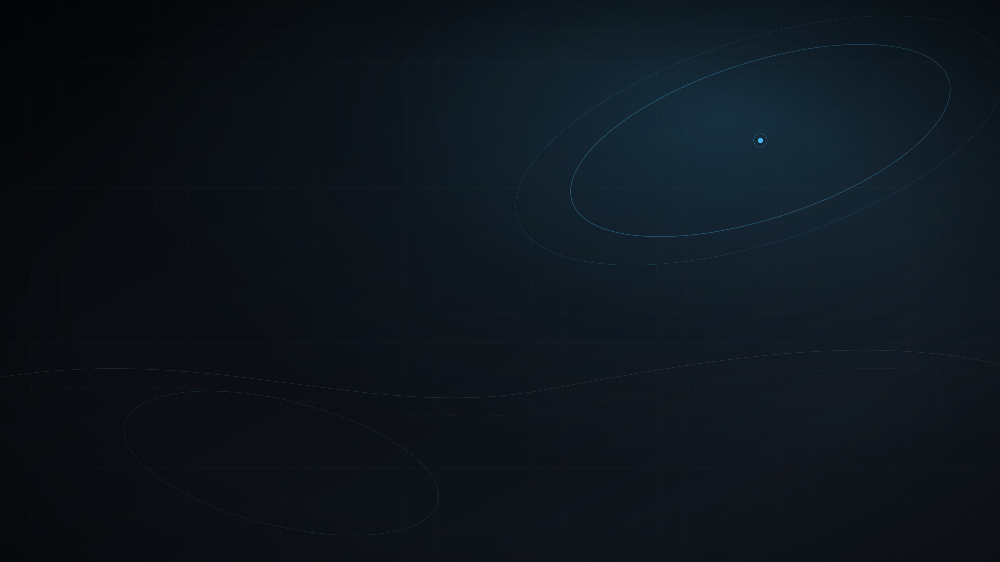
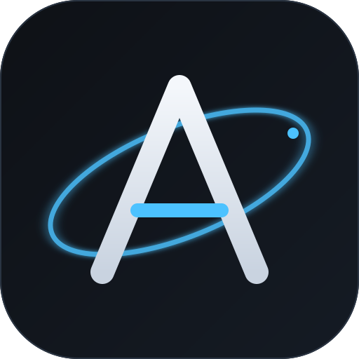

ARMOS 1.0 «GEN»
source-based Linux · Gentoo + OpenRC · XFCE 4.20 · x86_64
Это предпросмотр оформления на реальных ассетах проекта. Базовая система
сейчас собирается, поэтому загрузочного ISO и QEMU-сеанса пока нет:
визуальную загрузку покажу, как только появится ядро и initramfs.
Рабочий стол
ARMOS
Терминал
Thunar
⌨ us/ru◉▮▮▮
14:20 · вт, 17 ноя
Добро пожаловать в ARMOS 1.0
Source-based Linux с рабочим столом XFCE. Всё готово к работе — выберите действие.
Установить ARMOSУстановка на диск через Calamares
Центр ARMOSНастройки, драйверы, система
Магазин приложенийКаталог программ ARMOS
ОбновленияСинхронизация и обновление системы
Загрузчик GRUB
ARMOS 1.0 GEN
ARMOS 1.0 GEN — Live
ARMOS 1.0 GEN — Live with persistence
ARMOS 1.0 GEN — Live (safe graphics)
ARMOS 1.0 GEN — Live (RAM)
Обои

armos-dark-1080p · рабочий стол

armos-dark-4k · LightDM

Фон темы GRUB
Логотип
armos-logo-512.png

SVG (вектор)